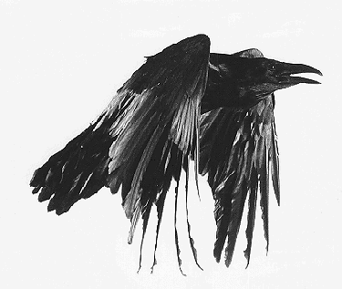

Corvidæ
by Nicholas Lange
Welcome to my home on the Internet.
I am a graduate student in the School of Natural Resources at the University of Michigan. Most of my academic work is focused on trends in global energy production and consumption, and what the future will look like. Closely related, I am also involved in the Center for the Study of Complex Systems, where I study agent-based modeling, network theory, and emergence.
The corvids are a large family of birds, most notably crows, ravens, and jays. They are remarkably clever and adaptive. Their cognitive abilities are on par with those of chimpanzees and dolphins. The land is ruled by hominids, the sea by delphinids, and the sky by the corvids.